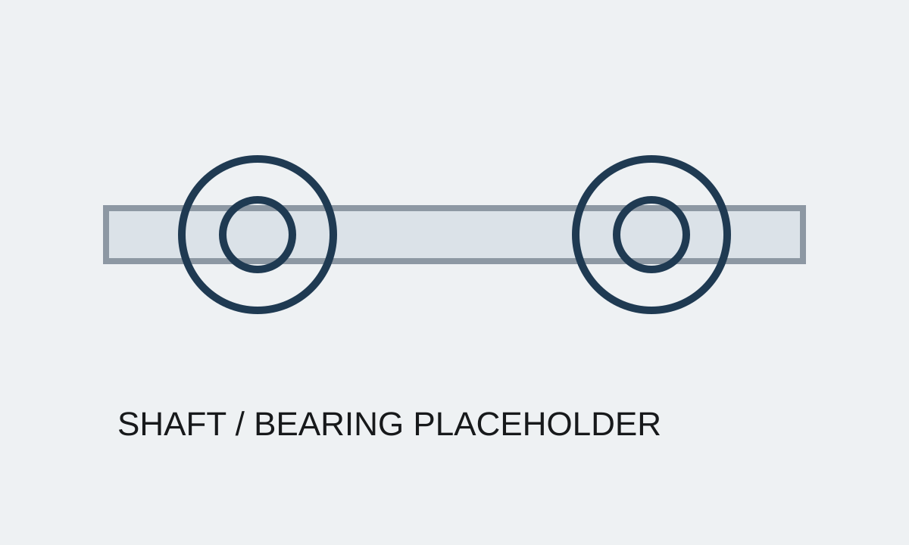

Case Study 02
Drivetrain Architecture & Power Increase
Owned drivetrain architecture including shafts, belt drive, bearings, and prop shaft system. Redesigned load paths and assembly architecture to improve torque capacity, manufacturability, and reliability, with modifications enabling an approximately 18% increase in system power.
Short Summary
This project focused on upgrading a constrained drivetrain architecture without relying on major tooling changes. The work tied together mechanical load paths, tolerance control, assembly strategy, and cost.
The Problem
The inherited drivetrain had structural and packaging limitations that restricted torque capacity and complicated assembly. Increasing power required a more robust architecture, not just local component changes.
Constraints
- Improve torque capacity without major tooling investment
- Maintain manufacturability and reasonable assembly flow
- Work through tolerance and interference risks across several connected parts
- Protect reliability while increasing system output
My Approach
- Redesigned critical load paths across shafts, bearings, and belt-drive interfaces
- Reviewed assembly architecture to remove avoidable complexity
- Evaluated tolerance stackups and interference fits affecting robustness
- Paired mechanical changes with cost and manufacturing review
What I Built
- Reworked drivetrain architecture around a more durable torque path
- Updated assembly concepts to improve manufacturability and serviceability
- Established a more credible basis for higher-power system operation
Results
- Enabled approximately 18% increase in system power
- Improved system robustness and assembly quality
- Reduced shaft-system cost by approximately 11%
What Went Wrong / Iterations
Because the drivetrain touched multiple interfaces, some improvements in one area exposed new issues in packaging or assembly order elsewhere. Iteration was necessary to keep the design balanced across torque capacity, manufacturability, and cost instead of optimizing only one metric.
What I'd Do Next
The next step would be expanded durability testing and tighter correlation between analysis, tolerance behavior, and real assembly variation to support production release confidence.
Images



Confidentiality Note
Details and visuals have been simplified to respect confidentiality while preserving the technical approach.